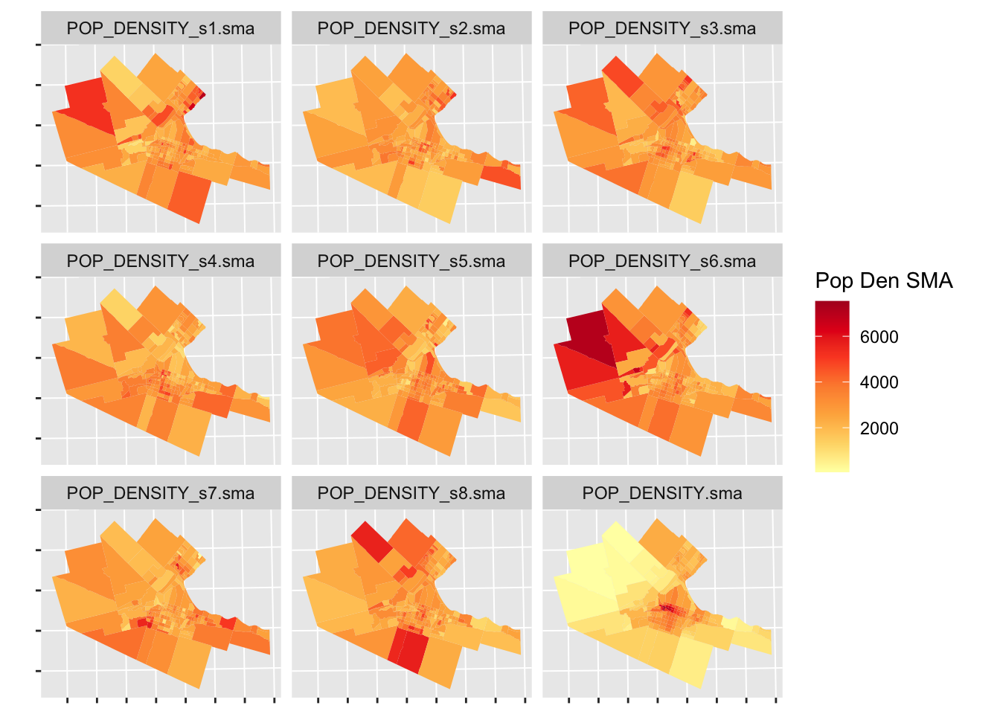
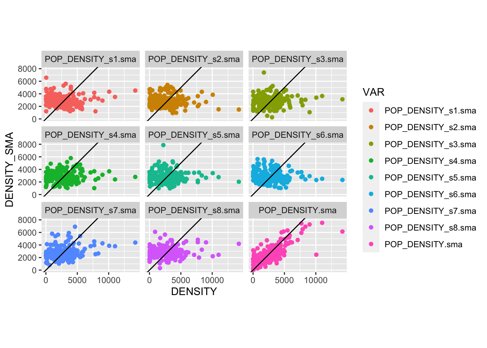
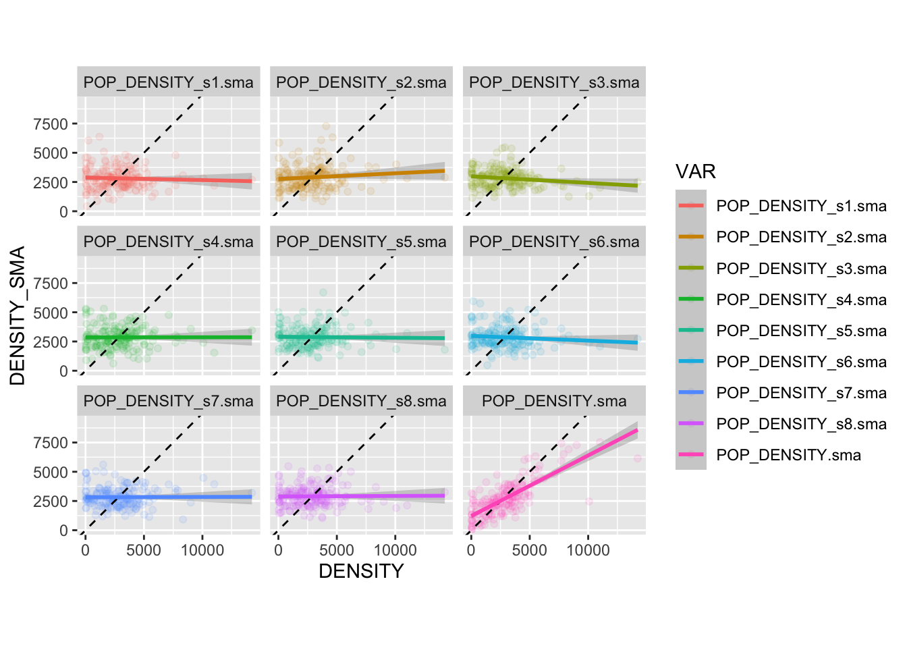
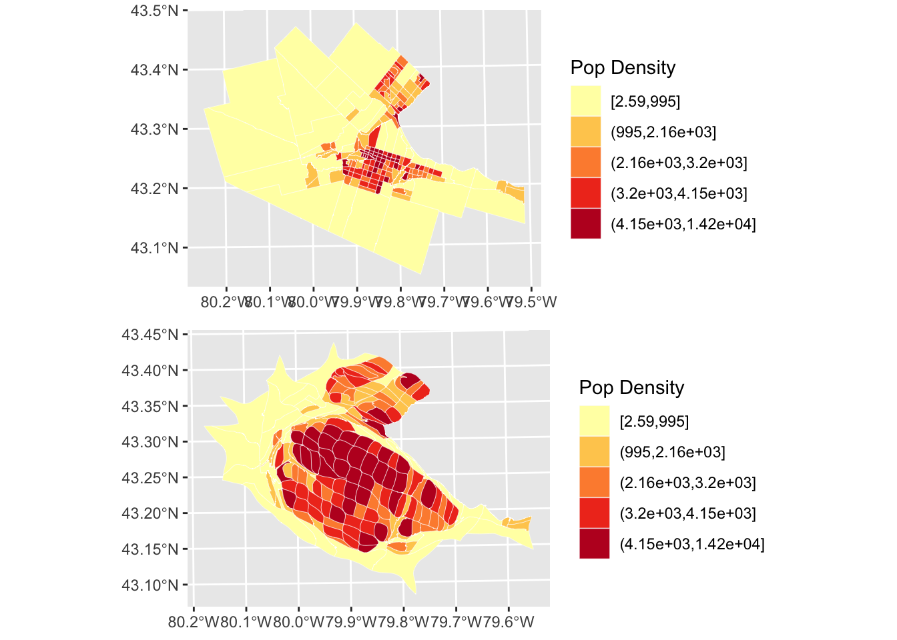
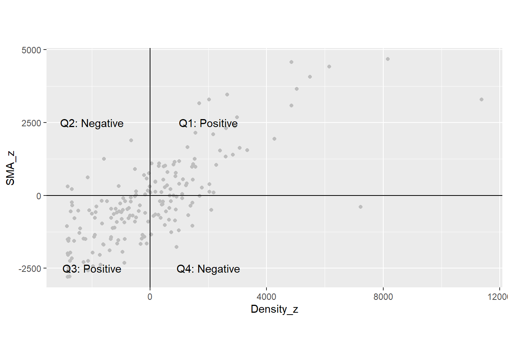

Chapter 23 Area Data III
NOTE: The source files for this book are available with companion package {isdas}. The source files are in Rmarkdown format and packed as templates. These files allow you execute code within the notebook, so that you can work interactively with the notes.
23.1 Learning Objectives
In the previous chapter and its corresponding activity, you learned about different ways to define proximity for area data, about spatial weights matrices, and how spatial weights matrices could be used to calculate spatial moving averages.
In this practice, you will learn about:
- Spatial moving averages and simulation.
- The concept of spatial autocorrelation.
- Moran’s \(I\) coefficient and Moran’s scatterplot.
- Hypothesis testing for spatial autocorrelation.
23.2 Suggested Readings
- Bailey TC and Gatrell AC (1995) Interactive Spatial Data Analysis, Chapter 7. Longman: Essex.
- Bivand RS, Pebesma E, and Gomez-Rubio V (2008) Applied Spatial Data Analysis with R, Chapter 9. Springer: New York.
- Brunsdon C and Comber L (2015) An Introduction to R for Spatial Analysis and Mapping, Chapter 7. Sage: Los Angeles.
- O’Sullivan D and Unwin D (2010) Geographic Information Analysis, 2nd Edition, Chapter 7. John Wiley & Sons: New Jersey.
23.3 Preliminaries
As usual, it is good practice to clear the working space to make sure that you do not have extraneous items there when you begin your work. The command in R to clear the workspace is rm (for “remove”), followed by a list of items to be removed. To clear the workspace from all objects, do the following:
rm(list = ls())Note that ls() lists all objects currently on the workspace.
Load the libraries you will use in this activity:
library(isdas)
library(gridExtra)
library(patchwork)
library(spdep)
library(sf)
library(tidyverse)Read the data used in this chapter. This is an object of class sf (simple feature) with the census tracts of Hamilton CMA and some selected population variables from the 2011 Census of Canada:
data(Hamilton_CT)You can quickly verify the contents of the dataframe by means of summary:
summary(Hamilton_CT)## ID AREA TRACT POPULATION
## Min. : 919807 Min. : 0.3154 Length:188 Min. : 5
## 1st Qu.: 927964 1st Qu.: 0.8552 Class :character 1st Qu.: 2639
## Median : 948130 Median : 1.4157 Mode :character Median : 3595
## Mean : 948710 Mean : 7.4578 Mean : 3835
## 3rd Qu.: 959722 3rd Qu.: 2.7775 3rd Qu.: 4692
## Max. :1115750 Max. :138.4466 Max. :11675
## POP_DENSITY AGE_LESS_20 AGE_20_TO_24 AGE_25_TO_29
## Min. : 2.591 Min. : 0.0 Min. : 0.0 Min. : 0.0
## 1st Qu.: 1438.007 1st Qu.: 528.8 1st Qu.:168.8 1st Qu.:135.0
## Median : 2689.737 Median : 750.0 Median :225.0 Median :215.0
## Mean : 2853.078 Mean : 899.3 Mean :253.9 Mean :232.8
## 3rd Qu.: 3783.889 3rd Qu.:1110.0 3rd Qu.:311.2 3rd Qu.:296.2
## Max. :14234.286 Max. :3285.0 Max. :835.0 Max. :915.0
## AGE_30_TO_34 AGE_35_TO_39 AGE_40_TO_44 AGE_45_TO_49
## Min. : 0.0 Min. : 0.0 Min. : 0.0 Min. : 0.0
## 1st Qu.: 135.0 1st Qu.: 145.0 1st Qu.: 170.0 1st Qu.:203.8
## Median : 195.0 Median : 200.0 Median : 230.0 Median :282.5
## Mean : 228.2 Mean : 239.6 Mean : 268.7 Mean :310.6
## 3rd Qu.: 281.2 3rd Qu.: 280.0 3rd Qu.: 325.0 3rd Qu.:385.0
## Max. :1320.0 Max. :1200.0 Max. :1105.0 Max. :880.0
## AGE_50_TO_54 AGE_55_TO_59 AGE_60_TO_64 AGE_65_TO_69 AGE_70_TO_74
## Min. : 0.0 Min. : 0.0 Min. : 0 Min. : 0.0 Min. : 0.0
## 1st Qu.:203.8 1st Qu.:175.0 1st Qu.:140 1st Qu.:115.0 1st Qu.: 90.0
## Median :280.0 Median :240.0 Median :220 Median :157.5 Median :130.0
## Mean :300.3 Mean :257.7 Mean :229 Mean :174.2 Mean :139.7
## 3rd Qu.:375.0 3rd Qu.:325.0 3rd Qu.:295 3rd Qu.:221.2 3rd Qu.:180.0
## Max. :740.0 Max. :625.0 Max. :540 Max. :625.0 Max. :540.0
## AGE_75_TO_79 AGE_80_TO_84 AGE_MORE_85 geometry
## Min. : 0.00 Min. : 0.00 Min. : 0.00 POLYGON :188
## 1st Qu.: 68.75 1st Qu.: 50.00 1st Qu.: 35.00 epsg:26917 : 0
## Median :100.00 Median : 77.50 Median : 70.00 +proj=utm ...: 0
## Mean :118.32 Mean : 95.05 Mean : 87.71
## 3rd Qu.:160.00 3rd Qu.:120.00 3rd Qu.:105.00
## Max. :575.00 Max. :420.00 Max. :400.0023.4 Spatial Moving Averages and Simulation
In the preceding chapter and activity you learned about different criteria to define proximity for the analysis of area data, and how spatial weights matrices can be used to code patterns of proximity among zones in a spatial system. Furthermore, you also saw how spatial weights matrices can be used to calculate spatial moving averages, which in turn can be used to explore spatial patterns in area data.
We will begin this chapter by briefly revisiting some of these notions. In the following chunk, we create a spatial weights matrix for Hamilton CMA census tracts based on the adjacency criterion:
# Function `poly2nb()` builds a list of neighbors based on contiguous boundaries. The argument for this function is an object of class "sf", which contains multi-polygon objects.
# Function `nb2listw()` takes a list of neighbors and creates a matrix of spatial weights in the form of a list. Together, these two functions create a spatial weights matrix for the Census Tracts in Hamilton.
Hamilton_CT.nb <- poly2nb(pl = Hamilton_CT)
Hamilton_CT.w <- nb2listw(Hamilton_CT.nb)Once that you have a matrix of spatial weights, it can be used to calculate the spatial moving average. In this example, we calculate the spatial moving average of the variable for population density, i.e., POP_DENSITY which is found in the sf dataframe:
# The function `lag.listw()` takes as argument the population density by census tracts in Hamilton, and calculates the moving average, with the "moving" part given by the local neighborhoods around each zone as defined by `Hamilton_CT.w`
POP_DENSITY.sma <- lag.listw(Hamilton_CT.w, Hamilton_CT$POP_DENSITY)After calculating the spatial moving average of population density, we can join this new variable to the sf object:
Hamilton_CT$POP_DENSITY.sma <- POP_DENSITY.smaAs you saw in your last activity, the spatial moving average can be used in two ways to explore the spatial pattern of an area variable: as a smoother and by means of a scatterplot, combined with the original variable.
23.5 The Spatial Moving Average as a Smoother
The spatial moving average, when mapped, is essentially a smoothing technique. What do we mean by smoothing? By reporting the average of the neighbors instead of the actually observed value of the variable, we reduce the amount of variability that is communicated. This often can make it easier to distinguish the overall pattern, at the cost of some information loss (think of how when mapping quadrats we lost some information/detail by calculating the intensity for areas).
We can illustrate the use of the spatial moving average as a smoother with the help of a little simulation.
To simulate a random spatial variable, we can randomize the observations that we already have, reassigning them at random to areas in the system. This is accomplished as follows:
# By sampling at random and without replacement from the original variable, we create a null landscape. We will call this `POP_DENSITY_s1`, where the "s1" part is to indicate that this is our first simulated random landscape. We will actually repeat this process below.
POP_DENSITY_s1 <- sample(Hamilton_CT$POP_DENSITY)Calculate the spatial moving average for this randomized variable (i.e., null landscape):
# We use the function `lag.listw()` to calculate the spatial moving average, but now for the null landscape we just simulated.
POP_DENSITY_s1.sma <- lag.listw(Hamilton_CT.w, POP_DENSITY_s1)Once that you have seen how to randomize the variable, repeat the process to simulate a total of eight new variables/null landscapes, and calculate their spatial moving averages:
# Note that we are creating 8 null landscapes based on our original population density variable, and that we are calculating the spatial moving average for each of them. Each simulation has a new name: s2, s3, s4,..., s8.
# Null landscape/simulation #2
POP_DENSITY_s2 <- sample(Hamilton_CT$POP_DENSITY)
POP_DENSITY_s2.sma <- lag.listw(Hamilton_CT.w, POP_DENSITY_s2)
# Null landscape/simulation #3
POP_DENSITY_s3 <- sample(Hamilton_CT$POP_DENSITY)
POP_DENSITY_s3.sma <- lag.listw(Hamilton_CT.w, POP_DENSITY_s3)
# Null landscape/simulation #4
POP_DENSITY_s4 <- sample(Hamilton_CT$POP_DENSITY)
POP_DENSITY_s4.sma <- lag.listw(Hamilton_CT.w, POP_DENSITY_s4)
# Null landscape/simulation #5
POP_DENSITY_s5 <- sample(Hamilton_CT$POP_DENSITY)
POP_DENSITY_s5.sma <- lag.listw(Hamilton_CT.w, POP_DENSITY_s5)
# Null landscape/simulation #6
POP_DENSITY_s6 <- sample(Hamilton_CT$POP_DENSITY)
POP_DENSITY_s6.sma <- lag.listw(Hamilton_CT.w, POP_DENSITY_s6)
# Null landscape/simulation #7
POP_DENSITY_s7 <- sample(Hamilton_CT$POP_DENSITY)
POP_DENSITY_s7.sma <- lag.listw(Hamilton_CT.w, POP_DENSITY_s7)
# Null landscape/simulation #8
POP_DENSITY_s8 <- sample(Hamilton_CT$POP_DENSITY)
POP_DENSITY_s8.sma <- lag.listw(Hamilton_CT.w, POP_DENSITY_s8)Next, we will add all the null landscapes that you just simulated to the dataframes, as well as their spatial moving averages. This is useful for mapping and plotting purposes:
# Here we add the simulated landscapes to the `sf` dataframe.
Hamilton_CT$POP_DENSITY_s1 <- POP_DENSITY_s1
Hamilton_CT$POP_DENSITY_s2 <- POP_DENSITY_s2
Hamilton_CT$POP_DENSITY_s3 <- POP_DENSITY_s3
Hamilton_CT$POP_DENSITY_s4 <- POP_DENSITY_s4
Hamilton_CT$POP_DENSITY_s5 <- POP_DENSITY_s5
Hamilton_CT$POP_DENSITY_s6 <- POP_DENSITY_s6
Hamilton_CT$POP_DENSITY_s7 <- POP_DENSITY_s7
Hamilton_CT$POP_DENSITY_s8 <- POP_DENSITY_s8
# Here we add the spatial moving averages of the simulated landscapes to the `sf` dataframe.
Hamilton_CT$POP_DENSITY_s1.sma <- POP_DENSITY_s1.sma
Hamilton_CT$POP_DENSITY_s2.sma <- POP_DENSITY_s2.sma
Hamilton_CT$POP_DENSITY_s3.sma <- POP_DENSITY_s3.sma
Hamilton_CT$POP_DENSITY_s4.sma <- POP_DENSITY_s4.sma
Hamilton_CT$POP_DENSITY_s5.sma <- POP_DENSITY_s5.sma
Hamilton_CT$POP_DENSITY_s6.sma <- POP_DENSITY_s6.sma
Hamilton_CT$POP_DENSITY_s7.sma <- POP_DENSITY_s7.sma
Hamilton_CT$POP_DENSITY_s8.sma <- POP_DENSITY_s8.smaIt would be useful to compare the original landscape of population density to the null landscapes that you created before. To create a single figure with choropleth maps of the empirical variable and the eight simulated variables using the facet_wrap() function of ggplot2, we must first reorganize the data so that all the population density variables are in a single column, and all spatial moving average variables are also in a single column. Further, we need a new column to identifies which variable the values in this column correspond to. We will solve this little data management problem by copying only the data we are interested in into a new dataframe (by means of select()), and then gathering the spatial moving averages into a single column:
#"Hamilton_CT2 is a new dataframe. Here, the pipe operators (%>%) are used to pass the original dataframe to the select() function, and then the output of that is passed on to the `gather()` function. Notice that we are selecting the empirical spatial moving average and the 8 simulated instances of population densities.
Hamilton_CT2 <- Hamilton_CT %>% # This pipe operator passes the dataframe to `select()`
# `select()` keeps only the spatial moving averages and geometry
select(POP_DENSITY.sma,
POP_DENSITY_s1.sma,
POP_DENSITY_s2.sma,
POP_DENSITY_s3.sma,
POP_DENSITY_s4.sma,
POP_DENSITY_s5.sma,
POP_DENSITY_s6.sma,
POP_DENSITY_s7.sma,
POP_DENSITY_s8.sma,
geometry) %>% # This pipe operator passes the dataframe with only the spatial moving average variables and the geometry to `gather()`
# `gather()` places all variables with the exception of `geometry` in a single column named `DENSITY_SMA` and creates a new variable called `VAR` with the names of the original columns (i.e., POP_DENSITY.sma, POP_DENSITY_s1.sma, etc.)
gather(VAR, DENSITY_SMA, -geometry)Now the new dataframe with all spatial moving averages in a single column can be used to create choropleth maps. The function facet_wrap() is used to create facet plots so that we can place all maps in a single figure:
ggplot() +
geom_sf(data = Hamilton_CT2,
aes(fill = DENSITY_SMA), color = NA) +
facet_wrap(~VAR, ncol = 3) + # We are creating multiple plots for single data frame by means of the "facet_wrap" function.
scale_fill_distiller(palette = "YlOrRd", direction = 1) + # Select palette for colors
labs(fill = "Pop Den SMA") + # Change the label of the legend
theme(axis.text.x = element_blank(),
axis.text.y = element_blank()) # Remove the axis labels to avoid cluttering the plots
The empirical variable is the map in the upper left corner (labeled POP_DENSITY.sma). The remaining 8 maps are simulated variables. Would you say the map of the empirical variable is fairly different from the map of the simulated variables? What are the key differences?
An additional advantage of the spatial moving average is its use in the development of scatterplots. The information below provides further examples of exploring spatial moving averages with scatterplots.
23.6 Spatial Moving Average Scatterplots
Let us explore the use of spatial moving average scatterplots. First, we will extract the density information from the original sf object, reorganize, and bind to Hamilton_CT2 so that we can plot using faceting:
Hamilton_CT2 <- Hamilton_CT2 %>% # Pass `Hamilton_CT2` as the first argument of `data.frame()`
data.frame(Hamilton_CT %>% # Pass `Hamilton_CT` to `st_drop_geometry()`
st_drop_geometry() %>% # Drop the geometry because it is already available in `Hamilton_CT2`.
# Select from `Hamilton_CT` the original population density and the 8 null landscapes simulated from it.
select(POP_DENSITY,
POP_DENSITY_s1,
POP_DENSITY_s2,
POP_DENSITY_s3,
POP_DENSITY_s4,
POP_DENSITY_s5,
POP_DENSITY_s6,
POP_DENSITY_s7,
POP_DENSITY_s8) %>% # Pass the result to `gather()`
gather(VAR, DENSITY) %>% # Copy all density variables to a single column, and create a new variable called `VAR` with the names of the original columns (i.e., POP_DENSITY, POP_DENSITY_s1, etc.)
select(DENSITY)) # Drop VAR from the the dataframeAfter reorganizing the data we can create the scatterplot of the empirical population density and its spatial moving average, as well as the scatterplots of the simulated variables and their spatial moving averages for comparison (the plots include the 45 degree line). Again, the use of facet_wrap() allows us to put all plots in a single figure:
#We are adding a geom and line (slope = 1)
ggplot(data = Hamilton_CT2, aes(x = DENSITY, y = DENSITY_SMA, color = VAR)) +
geom_point() +
geom_abline(slope = 1, intercept = 0) +
coord_equal() +
facet_wrap(~ VAR, ncol = 3)
What difference do you see between the empirical and simulated variables in these scatterplots?
It is possible to fit a line to the scatterplots (i.e., adding a regression line). This makes it easier to appreciate the difference between the empirical and simulated variables. This line would take the following form, with \(\beta\) as the slope of the line, and \(\alpha\) the intercept: \[ \overline{x_i} =\alpha + \beta x_i \]
Recreate the previous figure, but now add fitted lines to the scatterplots by means of the function geom_smooth(). The method “lm” means linear model, so the fitted line is a straight line:
ggplot(data = Hamilton_CT2, aes(x = DENSITY, y = DENSITY_SMA, color = VAR)) +
geom_point(alpha = 0.1) +
geom_abline(slope = 1, intercept = 0, linetype = "dashed") +
# Add a fitted line to the plots
geom_smooth(method = "lm") +
coord_equal() +
facet_wrap(~ VAR, ncol = 3) ## `geom_smooth()` using formula 'y ~ x'
You will notice that the slope of the line tends to be flat in the simulated variables; this is to be expected, since these variables are spatially random: the values of the variable at \(i\) are independent of the values of their local means!. In other words, the probability that the map is random is pretty high (in fact, since these 8 of these maps are null landscapes, we know for a fact that they are random).
The empirical variable, on the other hand, has a slope that is much closer to the 45 degree line. This indicates that the values of the variable at \(i\) are not independent of their local means: in other words, \(x_i\) is correlated with \(\overline{x_i}\), and the probability of a non-random pattern is high. This phenomenon is called spatial autocorrelation, and it is a fundamental way to describe spatial data. We will discuss this more extensively next.
23.7 Spatial Autocorrelation and Moran’s \(I\) coefficient
As seen above, the spatial moving average can provide evidence of the phenomenon of spatial autocorrelation, that is, when a variable displays spatial patterns whereby the values of a variable at zone \(i\) are not independent of the values of the variable in the neighborhood of zone \(i\).
A convenient modification to the concept of the spatial moving average is as follows. Instead of using the variable \(x\) for the calculation of the spatial moving average, we first center it on the global mean: \[ z_i = x_i - \bar{x} \]
In this way, the values of \(z_i\) are given in deviations from the mean. By forcing the variable to be centered on the mean, the slope of the fit line is forced to pass through the origin.
Calculate the mean-centered version of POP_DENSIT, and then its spatial moving average:
df_mean_center_scatterplot <- transmute(Hamilton_CT, # Modify values in dataframe
Density_z = POP_DENSITY - mean(POP_DENSITY), # Subtract the mean, so that the variable now is deviations from the mean
SMA_z = lag.listw(Hamilton_CT.w, Density_z)) # Calculate the spatial moving average of the newly created variable `Density_z`Compare the following two plots. You will see that they are identical, but in the mean-centered one the origin of the axes coincides with the means of \(x\) and the spatial moving average of \(x\). In other words, we have the same data, but we have displaced the origin of the plot:
# Create a scatterplot of population density and its spatial moving average
sc1 <- ggplot(data = filter(Hamilton_CT2, VAR == "POP_DENSITY.sma"),
aes(x = DENSITY, y = DENSITY_SMA)) +
geom_point(alpha = 0.1) +
geom_abline(slope = 1, intercept = 0, linetype = "dashed") +
geom_smooth(method = "lm") +
ggtitle("Population Density") +
coord_equal()
# Create a scatterplot of the mean-centered population density, and its spatial moving average
sc2 <- ggplot(data = df_mean_center_scatterplot,
aes(x = Density_z, y = SMA_z)) +
geom_point(alpha = 0.1) +
geom_abline(slope = 1, intercept = 0, linetype = "dashed") +
geom_smooth(method = "lm", formula = y ~ x-1) +
ggtitle("Mean-Centered Population Density") +
coord_equal()
# Use patchwork to place the two plots in a single figure
sc1 + sc2## `geom_smooth()` using formula 'y ~ x'
How is it useful to displace the origin of the axes to the mean values of \(x\) and its spatial moving average? To explain this, notice that the values on the top scatterplot are all positive. The values on the bottom scatterplot are positive or negative, depending if they are above or below the mean. This sign is interesting. Notice what happens when the variable \(z_i\) multiplies its spatial moving average: \[ z_i\bar{z}_i = z_i\sum_{j=1}^n{w_{ij}^{st}z_j} \]
When \(z_i\) is above its mean, it is a positive value. When it is below the mean, it is a negative value. Likewise, when \(\bar{z}_i\) is above its mean, it is a positive value, and negative otherwise. The mean is a useful benchmark to see if values are relatively high, or relatively low.
There are four possibilities with respect to the combinations of (relatively) high and low values.
- Quadrant 1 (the value of \(z_i\) is high & the value of \(\bar{z}_i\) is also high):
If \(z_i\) is above the mean, it is a relatively high value in the distribution (signed positive). If its neighbors are also relatively high values, the spatial moving average will be above the mean, and also signed positive. Their product will be positive (positive times positive equals positive).
- Quadrant 2 (the value of \(z_i\) is low & the value of \(\bar{z}_i\) is high):
If \(z_i\) is below the mean, it is a relatively low value in the distribution (signed negative). If its neighbors in contrast are relatively high values, the spatial moving average will be above the mean, and signed positive. Their product will be negative (negative times positive equals negative).
- Quadrant 3 (the value of \(z_i\) is low & the value of \(\bar{z}_i\) is also low):
If \(z_i\) is below the mean, it is a relatively low value in the distribution (signed negative). If its neighbors are also relatively low values, the spatial moving average will be below the mean, and also signed negative. Their product will be positive (negative times negative equals positive).
- Quadrant 4 (the value of \(z_i\) is high & the value of \(\bar{z}_i\) is low):
If \(z_i\) is above the mean, it is a relatively high value in the distribution (signed positive). If its neighbors are relatively low values, the spatial moving average will be below the mean, and signed negative. Their product will be negative (positive times negative equals negative).
These four quadrants are shown in the following plot:
ggplot(data = df_mean_center_scatterplot,
aes(x = Density_z, y = SMA_z)) +
geom_point(color = "gray") +
geom_hline(yintercept = 0) +
geom_vline(xintercept = 0) +
# You can also add annotations to plots by using `annotate()`. The inputs are the kind of annotation; in this case "text", but it could be circles, arrows, rectangles, labels, and other things. For text, you need a label, and coordinates for the annotation.
annotate("text", label = "Q1: Positive", x= 2000, y = 2500) +
annotate("text", label = "Q4: Negative", x= 2000, y = -2500) +
annotate("text", label = "Q2: Negative", x= -2000, y = 2500) +
annotate("text", label = "Q3: Positive", x= -2000, y = -2500) +
coord_equal()
We can take the products of \(z_i\) by \(\bar{z}_i\) for all \(i\) and add them: \[ \sum_{i=1}^n{z_i\overline{z_i}} = \sum_{i=1}^n{z_i\sum_{j=1}^n{w_{ij}^{st}z_j}} \]
If many dots are in Quadrants 1 and 3 in the scatterplot, the sum of the products will tend to be a large positive number. On the other hand, if many dots are in Quadrants 2 and 4, the sum of the products will tend to be a large number, but negative. Either case would be indicative of a pattern:
If the sum is positive, this would suggest that high & high values tend to be together, while low & low values also tend to be together.
In contrast, if the sum is negative, this would suggest that high values tend to be surrounded by low values, and vice-versa.
Finally, if the dots are scattered over the four quadrants, some products will be positive and some will be negative, and they will tend to cancel each other when summed. In this way, the sum of the products will tend to be closer to zero.
23.8 Moran’s \(I\) and Moran’s Scatterplot
Based on the discussion above, let us define the following coefficient, called Moran’s I: \[ I = \frac{\sum_{i=1}^n{z_i\sum_{j=1}^n{w_{ij}^{st}z_j}}}{\sum_{i=1}^{n}{z_i^2}} \]
The numerator in this expression is the sum of the products described above. The denominator is the variance of variable \(x_i\), and is used here to scale Moran’s \(I\) so that it is contained roughly in the interval \((-1, 1)\) (the exact bounds depend on the characteristics of the zoning system).
Moran’s \(I\) is a coefficient of spatial autocorrelation.
We can calculate Moran’s \(I\) as follows, using as an example the mean-centered population density (notice how it is the sum of the products of \(z_i\) by their spatial moving averages \(\bar{z}_i\), divided by the variance):
# Try to decipher the formula. You should be able to see that we are calculating the sum of the products by their spatial moving averages, divided by variance
sum(df_mean_center_scatterplot$Density_z * df_mean_center_scatterplot$SMA_z) / sum(df_mean_center_scatterplot$Density_z^2)## [1] 0.5179736Since the value is positive, and relatively high, this would suggest a non-random spatial pattern of similar values (i.e., high & high and low & low).
Moran’s \(I\) is implemented in R in the spdep package, which makes its calculation easy, since you do not have to go manually through the process of calculating the spatial moving averages, etc.
The function moran() requires as input arguments a variable, a set of spatial weights, the number of zones (\(n\)), and the total sum of all weights (termed \(S_0\)) - which in the case of row-standardized spatial weights is equal to the number of zones. Therefore:
mc <- moran(Hamilton_CT$POP_DENSITY, Hamilton_CT.w, n = 188, S0 = 188)
mc$I## [1] 0.5179736You can verify that this matches the value calculated above. The kind of scatterplots that we used previously are called Moran’s scatterplots, and they can also be created easily by means of the moran.plot() function of the spdep package:
# Confirming the results from the Moran coefficient above. We use "moran.plot" to illustrate the SMA of population density by census tract in Hamilton.
mp <- moran.plot(Hamilton_CT$POP_DENSITY, Hamilton_CT.w)
23.9 Hypothesis Testing for Spatial Autocorrelation
The tools described so far are useful to suggest whether a pattern is random; however, while inspection of the scatterplot is suggestive, we would like a more formal criterion to decide whether the pattern is random. Fortunately, Moran’s \(I\) can be used to develop a test of hypothesis. The expected value of Moran’s \(I\) under the null hypothesis of spatial randomness (or independence), as well as its variance, have been derived.
A test for autocorrelation based on Moran’s \(I\) is implemented in the spdep package:
#"moran.test" is calculating spatial autocorrelation of population density in Hamilton census tracts
moran.test(Hamilton_CT$POP_DENSITY, Hamilton_CT.w)##
## Moran I test under randomisation
##
## data: Hamilton_CT$POP_DENSITY
## weights: Hamilton_CT.w
##
## Moran I statistic standard deviate = 12.722, p-value < 2.2e-16
## alternative hypothesis: greater
## sample estimates:
## Moran I statistic Expectation Variance
## 0.517973553 -0.005347594 0.001691977Since the null hypothesis is of spatial independence, the \(p\)-value of the statistic is interpreted as the probability of making a mistake by rejecting the null hypothesis. In the present case, the \(p\)-value is such a small number that we can reject the null hypothesis with a high degree of confidence.
Moran’s \(I\) and Moran’s scatterplots are among the most widely used tools in the analysis of spatial area data.